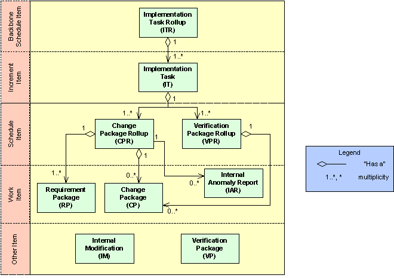
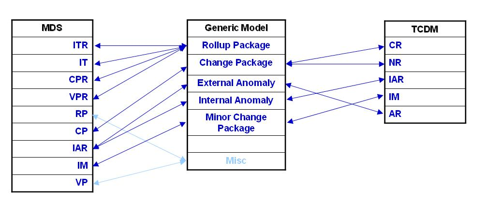
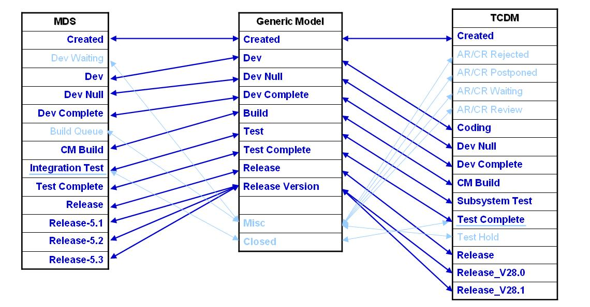

Aaron Kagawa
Philip Johnson
Collaborative Software Development Laboratory
Department of Information and Computer Sciences
University of Hawaii
kagawaa@hawaii.edu
johnson@hawaii.edu
Last update: 07/21/2004 11:00:21 AM
This paper is a design document for the Hackystat-SQI system, which will support multiple projects at the Jet Propulsion Laboratory. The fundamental difference between this Hackystat system and other Hackystat systems is the differences in the development processes of the projects we will be supporting.
The JPL projects that we will be support all use Harvest for version control. However, that is where the similarity begins and ends because Harvest can be configured differently for each project. There are two main areas of differences in the configurations of Harvest; (1) Harvest Package Model and (2) Harvest State Change Lifecycle.
There has been an ongoing discussion between Rich Hug and I whether we should "normalize" the data before sending it off to Hackystat. (By normalized we mean fit specific package models and state change lifecycles into a generic mapping). However, we feel that the differences between the model and lifecycles should not be hidden, because in fact these differences can affect quality! Therefore, we have decided that we shall send all data to Hackystat in their true form and allow Hackystat to process the differences.
The following sections address problems and solutions that Hackystat-SQI must address to be able to correctly interpret data from different projects.
As I explained in the introduction, different projects can have different Harvest Package Models. While this is perfectly reasonable, the differences in the package models presents a problem in Hackystat. Basically, Hackystat must be able to interpret the meaning of the different packages and be able to calculate relevant information for these packages. It has been proven in the Hackystat-MDS system, where we constructed a Hackystat system for a single JPL Project that "package types" and their meanings are an important piece of the puzzle. In Hackystat-MDS we were able to do this by "hard coding" in the significance of the Package Types and implemented specific code that tailored to the MDS Harvest Package Model. However, in Hackystat-SQI "hard coding" the Harvest Package Model is not possible.
Therefore, Hackystat-SQI needs a way to interpret different Harvest Package Models, in a sense mapping the packages to generic meanings. Here are two Harvest Package Models from the MDS and TCDM projects
MDS Package Model has a complex structure that groups these packages into a hierarchical structure. The following figure provides this structure:

The following table proves some explanation of the significance of the packages.
| MDS Harvest Package | Significance |
|---|---|
| Implementation Task Rollup (ITR) | |
Implementation Task (IT) |
|
| Change Package Rollup (CPR) | |
| Verification Package Rollup (VPR) | |
| Requirement Package (RP) | |
| Change Package (CP) | represents new "work" or functionality |
| Internal Anomaly Report (IAR) | represents a defect |
| Internal Modification (IM) | represents a small change |
| Verification Package (VP) |
Unlike the MDS Harvest Package Model, the TCDM Harvest Package Model does not have a complicated structure. It simply contains the following 4 package types:
| TCDM Harvest Package | Significance |
|---|---|
| New Request (NR) | represents new work |
Change Request (CR) |
|
| External Anomaly Report (AR) | a defect in released software |
| Internal Anomaly Report (IAR) |
The fundamental problem that Hackystat-SQI faces is how to calculate the Package Level information without having to "hard code" package type information for each Harvest Package Model. For example, one could think of an analysis that calculates the average age of a package that represents new "work" or functionality. To implement a generic analysis that works for all projects the code needs to be able to determine what the package type within a package model represents new functionality.
The solutions to the problem is to create a Mapping system that allows a specific Harvest Package Model to map to a Generic Model. The following graphic is a mapping of MDS and TCDM to a generic model.

This mapping has the following properties:
Harvest Package Model Mapping in Relational Database Table form
To make this a little easier to visualize I've converted the previous graphical representation of the Mapping into Relational Database Tables. Basically, all we need are two tables for each model; (1) a table for the Package Types and (2) an intersect table that maps the Package Types to the generic model.
| Generic Harvest Package Model Table | MDS Harvest Package Model Table | TCDM Harvest Package Table | ||
|---|---|---|---|---|
| Rollup Package | Implementation Task Rollup (ITR) | New Request (NR) | ||
| Work Package | Implementation Task (IT) |
Change Request (CR) |
||
| External Anomaly | Change Package Rollup (CPR) | External Anomaly Report (AR) | ||
| Internal Anomaly | Verification Package Rollup (VPR) | Internal Anomaly Report (IAR) | ||
| Minor Change Package | Requirement Package (RP) | |||
| Unmatched | Change Package (CP) | |||
| Internal Anomaly Report (IAR) | ||||
| Internal Modification (IM) | ||||
| Verification Package (VP) |
| Generic-MDS Harvest Package Model Mapping Table (Intersect Table) | |
|---|---|
| MDS | Generic |
| Implementation Task Rollup (ITR) | Rollup Package |
Implementation Task (IT) |
Rollup Package |
| Change Package Rollup (CPR) | Rollup Package |
| Verification Package Rollup (VPR) | Rollup Package |
| Requirement Package (RP) | Work Package |
| Change Package (CP) | Work Package |
| Internal Anomaly Report (IAR) | Internal Anomaly |
| Internal Modification (IM) | Minor Change Package |
| Verification Package (VP) | Unmatched |
Harvest Package Model Mapping in XML form
Because Hackystat currently does not use a Relational Database, we need to store the mapping information in XML files. The advantage of using XML files in this situation is that when a new Harvest Package Model is introduced the Hackystat administrator would just have to created a XML file that provides the mapping and restart the server. Hackystat-SQI would read in the XML file and dynamically have the mapping. This approach is much more flexible than using a type-safe enumeration approach, because we would then have to compile and rebuild the Hackystat-SQI system. The drawback to using XML files is that it is difficult to ensure the correct values (schema is perfect for this, however, currently Hackystat does not utilize this in any of our XML files).
It seems that the Generic Model can be hard coded into the system, because this list of packages probably will not change with the introduction of a new project.
<harvestpackagemodel type="mds"> <harvestpackage name="Implementation Task Rollup" type="ITR" mapping="Rollup Package" /> <harvestpackage name="Implementation Task" type="IT" mapping="Rollup Package" /> <harvestpackage name="Change Package Rollup" type="CPR" mapping="Rollup Package" /> <harvestpackage name="Verification Package Rollup" type="VPR" mapping="Rollup Package" /> <harvestpackage name="Requirement Package" type="RP" mapping="Work Package" /> <harvestpackage name="Change Package" type="CP" mapping="Work Package" /> <harvestpackage name="Internal Anomaly Report" type="IAR" mapping="Internal Anomaly" /> <harvestpackage name="Internal Modification" type="IM" mapping="Minor Change Package" /> <harvestpackage name="Verification Package" type="VP" mapping="Unmatched" /> </harvestpackagemodel>
This XML implementation works well for the MDS Harvest Package Model. However, the TCDM model presents a problem.
<harvestpackagemodel type="tcdm"> ... <harvestpackage name="Change Request" type="CR" mapping="Work Package" /> <harvestpackage name="New Request" type="NR" mapping="Work Package" /> <harvestpackage name="Internal Anomaly Report" type="IAR" mapping="Internal Anomaly" /> <harvestpackage name="Anomaly Report" type="AR" mapping="External Anomaly" /> ... </harvestpackagemodel>
Rich Hug has explained that the IAR type in the TCDM model seems to be a "catch all" package type, in that IARs have different meanings. For example, some IARs are really IMs. The problem is whether the XML should look like the following.
<harvestpackagemodel type="tcdm"> ... <harvestpackage name="Internal Anomaly Report" type="IAR" mapping="Internal Anomaly, Minor Change Package" /> ... </harvestpackagemodel>
The problem with this representation is that we will not know when a IAR is actually a Internal Anomaly or a Minor Change Package. There are a couple solutions to this problem; (1) we let Rich "normalize" the data on the Harvest side and send "IM"s instead of IARs when appropriate or (2) have another attribute in the State Change data so on the Hackystat side we can make that determination.
How to use the Harvest Package Model Mapping in Java
The Java implementation to manage the different Harvest Package Models includes representations for the individual models, mappings, and reading the xml files. In addition to the Harvest Package Models there must also be representations for Harvest Packages. These representations calculate the properties of Harvest Package. For example, a Work Package representation will include the number of files, builds, etc.
HarvestPackageModel
As I explained in the introduction, different projects can have different Harvest State Lifecycles. While this is perfectly reasonable, the differences in the state change lifecycles presents a problem in Hackystat. Basically, Hackystat must be able to interpret the meaning of the different Harvest States and be able to calculate relevant information. It has been proven in the Hackystat-MDS system, where we constructed a Hackystat system for a single JPL Project that "harvest states" and their meanings are an important piece of the puzzle. In Hackystat-MDS we were able to do this by "hard coding" in the significance of the Harvest States and implemented specific code that tailored to the MDS Harvest State Change Lifecycle. However, in Hackystat-SQI "hard coding" is not possible.
Therefore, Hackystat-SQI needs a way to interpret different Harvest State Change Lifecycles, in a sense mapping the states to generic meanings. Here are two Harvest State Change Lifecycles from the MDS and TCDM projects
The following table proves some explanation of the significance of the states .
| MDS Harvest States | Significance |
|---|---|
| Created | |
Dev Waiting |
|
| Dev | |
| Dev Null | |
| Dev Complete | |
| Build Queue | |
| CM Build | |
| Integration Test | |
| Test Complete | |
| Release | |
| Release-5.1 | |
| Release-5.2 | |
| Release-<version> |
The following :
| TCDM Harvest States | Significance |
|---|---|
| Created | |
AR/CR Rejected |
|
| AR/CR Postponed | |
| AR/CR Waiting | |
| AR/CR Review | |
| Coding | |
| Dev Null | |
| Dev Complete | |
| CM Build | |
| Subsystem Test | |
| Test Complete | |
| Test Hold | |
| Release | |
| Release_V28.0 | |
| Release_V28.1 | |
| Release_V<version> |
The fundamental problem that Hackystat-SQI faces is how to interpret Harvest State information without having to "hard code" state information for each Harvest State Lifecycle. For example, one could think of an analysis that calculates the number of days a package spends in development. In MDS this state is "DEV" and in TCDM this state is "Coding" . To implement a generic analysis that works for all projects the code needs to be able to determine what the harvest state within a state change lifecycle represents "development".
As more project enter the Hackystat-SQI it is unreasonable to assume that we can keep hard coding each of the Harvest State Change Lifecycles.
The solutions to the problem is to create a Mapping system that allows a specific Harvest State Change Lifecycle to map to a Generic Lifecycle. The following graphic is a mapping of MDS and TCDM to a generic lifecycle.

As you can see, the mapping between the Harvest States is straightforward.
Harvest State Change Lifecycle Mapping in Relational Database Table form
To make this a little easier to visualize I've converted the previous graphical representation of the Mapping into Relational Database Tables. Basically, all we need are two tables for each lifecycle; (1) a table for the Harvest States and (2) an intersect table that maps the Harvest States to the generic lifecycle.
| Generic Harvest State Change Lifecycle Table | MDS Harvest State Change Lifecycle Table | TCDM Harvest State Change Lifecycle Table | ||
|---|---|---|---|---|
| Created | Created | Created | ||
| Dev | Dev Waiting |
AR/CR Rejected |
||
| Dev Null | Dev | AR/CR Postponed | ||
| Dev Complete | Dev Null | AR/CR Waiting | ||
| Build | Dev Complete | AR/CR Review | ||
| Test | Build Queue | Coding | ||
| Test Complete | CM Build | Dev Null | ||
| Release | Integration Test | Dev Complete | ||
| Release Version | Test Complete | CM Build | ||
| Unmatched | Release | Subsystem Test | ||
| Closed | Release-5.1 | Test Complete | ||
| Release-5.2 | Test Hold | |||
| Release-<version> | Release | |||
| Release_V28.0 | ||||
| Release_V28.1 | ||||
| Release_V<version> |
| Generic-MDS Harvest State Change Lifecycle Mapping Table (Intersect Table) |
|
|---|---|
| MDS | Generic |
| Created | Created |
Dev Waiting |
Unmatched |
| Dev | Dev |
| Dev Null | Dev Null |
| Dev Complete | Dev Complete |
| Build Queue | Unmatched |
| CM Build | Build |
| Integration Test | Test |
| Test Complete | Test Complete, Closed |
| Release | Release |
| Release-5.1 | Release Version |
| Release-5.2 | Release Version |
| Release-<version> | Release Version |
Harvest State Change Lifecycle Mapping in XML form
Because Hackystat currently does not use a Relational Database, we need to store the mapping information in XML files. The advantage of using XML files in this situation is that when a new Harvest State Change Lifecycle is introduced the Hackystat administrator would just have to created a XML file that provides the mapping and restart the server. Hackystat-SQI would read in the XML file and dynamically have the mapping. This approach is much more flexible than using a type-safe enumeration approach, because we would then have to compile and rebuild the Hackystat-SQI system. The drawback to using XML files is that it is difficult to ensure the correct values (xml schema is perfect for this, however, currently Hackystat does not utilize this in any of our XML files).
It seems that the Generic Model can be hard coded into the system, because this list of packages probably will not change with the introduction of a new project.
<harveststatelifecycle type="mds"> <harveststate name="created" order="0" mapping="created" /> <harveststate name="dev waiting" order="1" mapping="unmatched" /> <harveststate name="dev" order="2" mapping="dev" /> <harveststate name="dev null" order="3" mapping="dev null" /> <harveststate name="dev complete" order="4" mapping="dev complete" /> <harveststate name="build queue" order="5" mapping="unmatched" /> <harveststate name="cm build" order="6" mapping="build" /> <harveststate name="integr test" order="7" mapping="test" /> <harveststate name="test complete" order="8" mapping="test complete" closed="true" /> <harveststate name="release" order="9" mapping="release" /> <harveststate name="release-5.1" order="10" mapping="release version" /> <harveststate name="release-5.2" order="11" mapping="release version" /> <harveststate name="release-5.3" order="12" mapping="release version" /> </harveststatelifecycle>
Notice the "closed" attribute in the test complete entry, this attribute indicates what harvest state represents a closed package. (I don't know if this is the best way to do this).
How to use the Harvest State Change Lifecycle Mapping in Java
The Java implementation to manage the different Harvest State Change Lifecycle includes representations for the individual lifcycles, mappings, and reading the xml files.
There is one last twist to this issue. It is possible for different projects to use the same Harvest Package Model and/or Harvest State Change Lifecyle. Therefore, this means that we cannot associate one Model/Lifecycle with a Project. I propose that we add a Key-Value attribute to Project representations. This will enable Hackystat-SQI to determine what Model/Lifeclye a project is using.
Project project = ProjectSelector.getSelectedProject(user); HarvestStateChangeLifecycle projectLifecycle = project.getKeyValuePair(Project.Lifecycle).getValue(); HarvestState testState = projectLifecycle.getMapping(GenericLifecycle.TEST);
This example code demonstrates the ability to look determine the specific Harvest State change Lifecycle associated with a project. And when the lifecycle is known we can then use the mapping to get a specific Harvest State associated with that lifecycle.
Another problem associated with different Lifecycles and Models is the Hackstat HTML Interface. Because, projects can have different lifecycles and models with different types and states the interface should be dynamic depending on what project is selected. For example, if the MDS world wants to know how many packages entered the Build Queue state they should be able to select Build Queue without seeing the AR/CR Review state from the TCDM lifecycle.